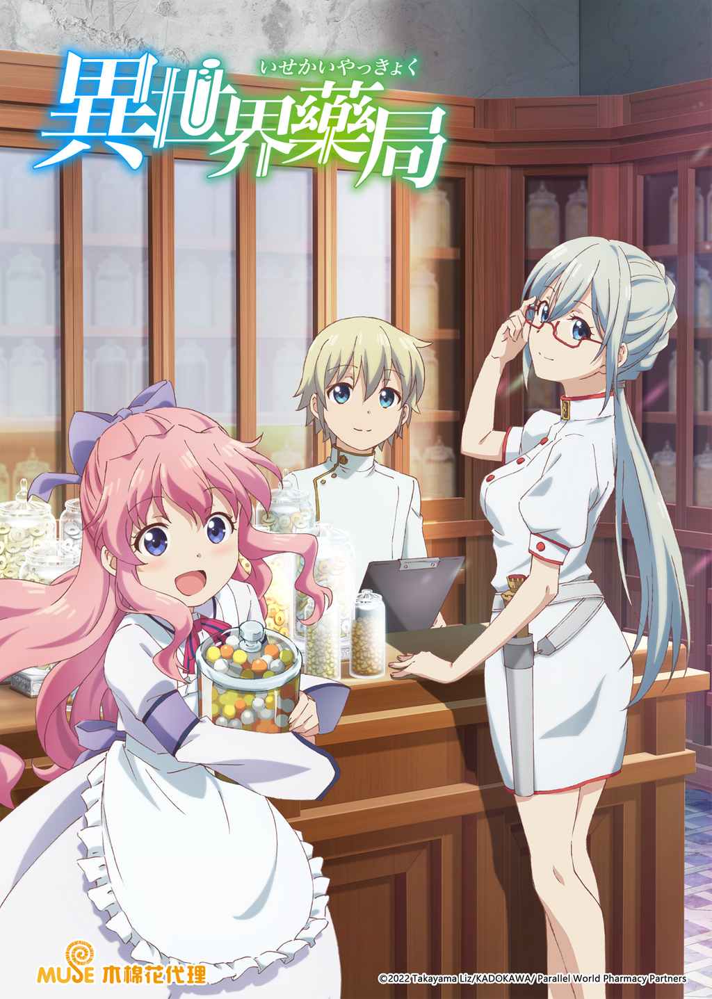

AnimeInterester
異世界藥局

故事簡介
日本藥學家藥谷完治因妹妹離世的傷痛，傾注一生在藥物開發的工作，最終過勞而死。轉生到異世界後，意外發現自己變成見習藥師，身上還帶有藥神聖紋，能使用創造及消除物質的神術，以及「診眼」，魔力甚至高於擁有火神聖紋的女皇和大神官，被神殿及知情人士視為藥神的化身。 在一次跟隨首席宮廷兼尊爵的父親前往皇宮後，眼見身患肺結核的女皇差點被父親和眾醫師、藥師安樂死，便自薦自己製作適當的藥物為女皇和受到傳染的父親治療。女皇在康復後，透過首席宮廷醫師及其團隊觀察，確認完治擁有超越時代的知識，並從書僮口中得知他想開設服務平民和貴族的藥局，於是取得其父親的出師同意，並賜予法馬「宮廷藥師」的官職和開設藥局的批准、資金及建設的人手…
製作人員
原作：高山理図
導演：草川啓造
劇本統籌：渡航
角色設計：松本麻友子
美術監督：細井友保
色彩設計：林由稀
攝影監督：伊藤康行
音響監督：立石弥生
音響效果：猪俣泰史
音響製作：ビットグルーヴプロモーション
音樂：加藤達也 / 宝野聡史
音樂製作：ポニーキャニオン
製作：「異世界薬局」製作委員会
聲優名單
法馬·梅德西斯：豐崎愛生
艾蘭諾·博納富瓦：上田麗奈
夏珞特·索芮：本渡楓
伊莉莎白二世：伊藤静
布魯諾·梅德西斯：乃村健次
布蘭琪·梅德西斯：長繩麻理亞
各集標題
| 話數 | 標題 |
|---|---|
| 1 | 轉生藥學者與異世界 |
| 2 | 師傅與弟子 |
| 3 | 首席宮廷藥師與轉生藥學者 |
| 4 | 皇帝陛下與御准創業 |
| 5 | 異世界藥局的日常與化妝品 |
| 6 | 兄妹與海 |
| 7 | 沒有影子的少年與異端審問官 |
| 8 | 流行性感冒與藥局的黎明 |
| 9 | 某個邪惡男子的故事 |
| 10 | 黑死病 |
| 11 | 艾斯塔克村的奇蹟 |
| 12 | 他無法醫治之人 |